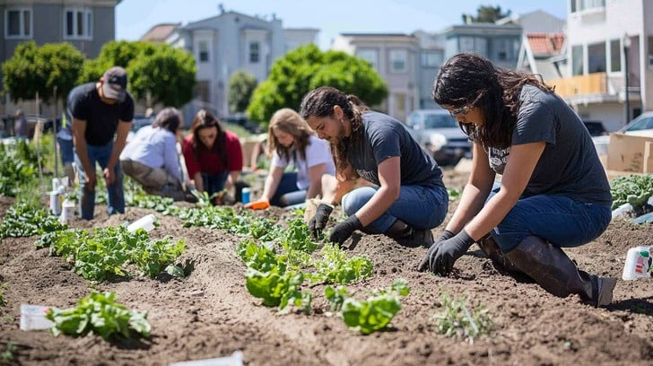
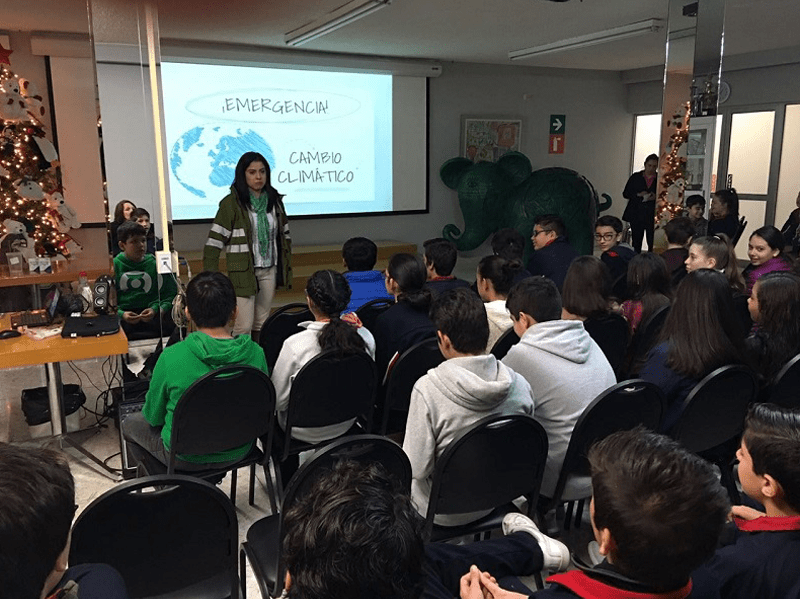

Community Action
Mobilizing communities for effective climate solutions
Introduction to Community Climate Action
Community climate action involves local groups working together to address climate change through collective efforts. These grassroots initiatives empower people to make meaningful contributions to climate solutions while strengthening community bonds.

Community-based approaches to climate action are essential because they can be tailored to local needs, build social resilience, and create models that can be scaled up or replicated elsewhere.
Key Fact
Research shows that community-based initiatives can reduce household carbon footprints by up to 20% through collective action and behavior change.
Organizing Local Events
Organizing local events is a powerful way to raise awareness, build community support, and take direct action on climate issues.

Effective community climate events include:
- Climate awareness workshops and educational seminars
- Community clean-up days for parks, beaches, and waterways
- Tree planting and habitat restoration projects
- Climate-friendly skills workshops (e.g., bike repair, gardening)
- Climate film screenings and discussion forums
Key Fact
Community events that combine education with hands-on action have been shown to be most effective in promoting long-term behavior change and continued engagement.
Community Gardens and Urban Farming
Community gardens and urban farming initiatives provide multiple climate benefits while enhancing food security, community cohesion, and urban biodiversity.
Climate benefits of community gardens include:
- Reducing food miles and associated transportation emissions
- Creating carbon sinks through plant growth and soil health
- Mitigating urban heat island effects through green spaces
- Reducing food waste through local production and distribution
- Teaching sustainable agriculture practices
Key Fact
Urban agriculture can reduce food-related carbon emissions by up to 10% in cities while providing fresh produce to communities that may have limited access to healthy foods.
Neighborhood Energy Initiatives
Community-based energy initiatives empower neighborhoods to transition to renewable energy sources and improve energy efficiency.

Examples of neighborhood energy initiatives include:
- Community solar projects
- Neighborhood energy efficiency campaigns
- Community-owned renewable energy cooperatives
- Bulk purchasing programs for solar panels or energy-efficient appliances
- Energy audits and weatherization assistance programs
Key Fact
Community-owned renewable energy projects have grown significantly in recent years, with over 4,500 community energy initiatives across Europe alone, generating both clean energy and local economic benefits.
Education and Outreach Programs
Education and outreach programs are essential for building climate literacy, inspiring action, and fostering a culture of sustainability within communities.
Effective climate education and outreach approaches include:
- School-based climate education programs
- Intergenerational learning initiatives
- Citizen science projects that monitor local environmental changes
- Climate storytelling and arts-based engagement
- Peer-to-peer learning networks
Key Fact
Studies show that community-based education programs that connect climate change to local impacts and solutions are more effective at motivating action than approaches that focus solely on global problems.